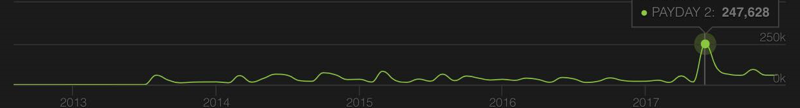

劫薪日2
|
發行日期 : 2013年8月13日
發行公司 : 505 Games
遊戲類型 : 第一人稱射擊遊戲
同類型遊戲 ：GTA系列、看門狗
遊戲平台 : PC、PS3、PS4、Xbox 360、Xbox One
人數變化圖

|
|
遊戲內容
遊戲背景發生在前作兩年後，一個新的搶匪團來到美國華盛頓特區準備進行另一次搶劫狂歡。玩家扮演這七人搶匪團其中的一位成員，玩家可以選擇獨自行動，或是與最多三位同伴一起行動。遊戲中有各式各樣的搶劫行動，諸如搶銀行、商店和運鈔車，甚至還有製造與銷售毒品。本作相對於前作來說提供了更多玩家自定義選項、更多種類的關卡，以及重製過的潛行技巧。